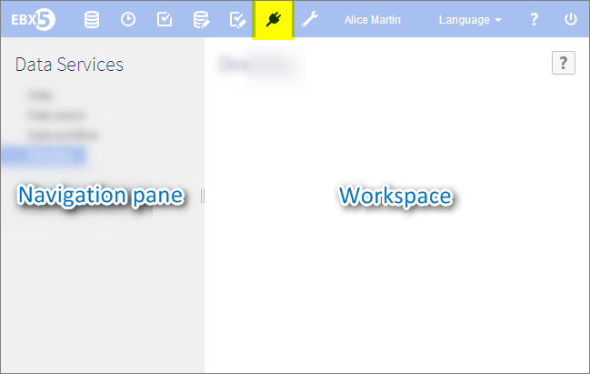

Introduction to data services
Data services offers the possibility to access and interact with EBX5, in order to:
access data stored in tables (see data),
interact with data space (see data space),
control workflows (see workflow),
define lineage with 3rd-party software (see lineage).
A data service is a standard web service which exposes all features and data (example: creating a data space, updating records in a data set, etc.).
If you still wonder what those technical words refer to, do not hesitate to go to the glossary.
Data services overview
Access within the interface

Associated notions and tools
Standard data services | Data services allowing access to a given data set/data space/workflow. |
Lineage | Data services that take into consideration user permissions and avoids this way possible errors such as an access request to data hidden from the actual user logged in. |
To know more about the WSDL (Web Services Description Language), please refer to the World Wide Web Consortium (W3C).
 User guide table of contents
User guide table of contents